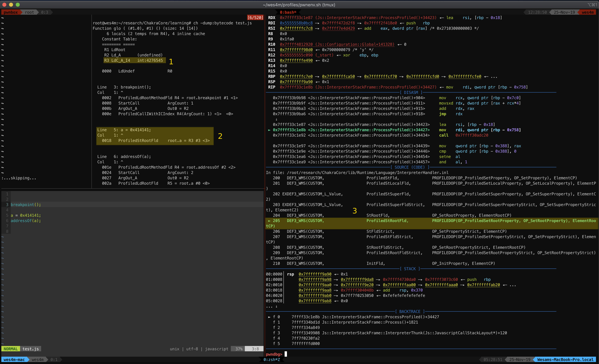
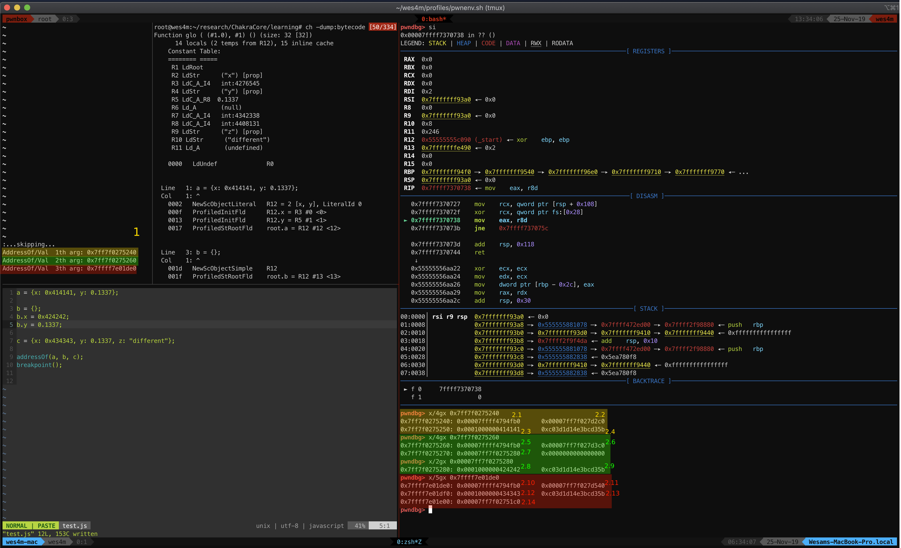

إستغلال ثغرات المتصفح Webbrowser exploitation
تنويه: إستغلال ثغرات المتصفحات ليس من إختصاصي إنما هذه السلسلة عبارة عن تدوين مستمر لطريقي في خوض هذا المجال وتعزيز لفهمي. أي اغلاط او اضافات أكون شاكر لكم. ملاحظة: إطلاع سابق وفهم كيفية عمل لغات البرمجة. والـ Interpreters بشكل سطحي مهمة جدآ لهذا الموضوع.
قبل الخوض في إستغلال ثغرات المتصفحات يجب أن نكون على إطلاع بأن المتصفحات في هذا الوقت أصبحت من أضخم وأهم البرمجيات قد توازي في تعقيدها أنظمة التشغيل نظرآ لتكونها من عناصر عديدة مترابطة ومعقدة. وكل ما إزداد التعقيد وحجم الكود برمجيآ كل ما إتسع الـ Attack surface. فعلى سبيل المثال عندما ترغب بالعثور على ثغرة وإستغلالها في نظام تشغيل ما. يجب عليك تحديد نظام التشغيل ومن ثم تحديد الجزء الذي ترغب في تحليله ودراسته للعثور على ثغرات. كذلك في المتصفحات.
يتكون المتصفح في هذا الوقت من عدة أجزاء Components أهمها ( ليست محصورة ) :
- UI: واجهة المستخدم
- Renderer engine: فلابد من جزء مسؤول عن تحويل أكواد الصفحات من عدة لغات مثل html, css لكي يراها المستخدم.
- Networking: الجزء المسؤول عن كل مايتعلق بالشبكة وإرسال الطلبات وغيرها.
- Javascript engine: المحرك المسؤول عن كل مايتعلق بالـ Javascript وتنفيذها للمستخدم.
- Sandboxing. IPC: من أهم الاجزاء التي تعتبر جزء مسؤول عن حماية المستخدم حتى بعد وجود ثغرات.
- وغيرها الكثير ..
كل جزء يعتبر ضخم ومتفرع جدآ وقابل للإستغلال بشكل أو بآخر. ويوجد من يكرس كامل دراسته في جزء واحد فقط من هذه الأجزاء. في هذه السلسلة سيكون تركيزي على الـ Javascript engine وكيفية إستغلال ثغراته.
توجد عدة متصفحات ولكل متصفح الـ Javascript engine الخاص به عادتآ. أمثلة على ذلك:
- Safari: JavascriptCore
- Google Chrome: V8
- Microsoft Edge: ChakraCore
- Firefox: SpiderMonkey
مقدمة عن Javascript engines
هل سبق وسألت نفسك كيف يقوم المتصفح بتنفيذ أكواد الـ javascript بسرعة عالية ؟ ومدى أهمية السرعة في المتصفحات أو لماذا لايقوم مصممي المواقع بعمل Compile لأكواد الـ javascript وتضمينها مع صفحاتهم.
توجد عدة أسباب أهمها الحجم، السرعة، والحرية في التواصل مع العناصر الإخرى في الصفحة إن صح التعبير. فعادتآ اكواد الجافاسكربت مرتبطة بالـ DOM في الصفحة وتتعامل مع الـ Renderer engine لإضافة نصوص وقرائتها والحصول على معطيات من المستخدم وربطها بـ Events كضغط أزرار أو تغيير اللوان CSS وغيرها من ترابطات بين كل أجزاء الصفحة.
يمكنك دراسة الـ Javascript engine بشكل عام والقراءة عنه وغيره .. لكن لإستغلاله لابد من إختيار محرك محدد والتعمق فيه. وقع إختياري على ChakreCore مفتوح المصدر ومن هنا تبدأ الرحلة.
ChakraCore
ChakraCore هو أساس محرك Chakra وهو الجزء المسؤول عن الـ javascript في متصفح Microsoft Edge يتكون المحرك من عدة أجزاء قابلة للإستغلال ومعقدة كذلك ولكن سيكون تركيزي على جزء واحد فقط.

الجافاسكربت هي لغة برمجة كغيرها من اللغات فلو قمت بدراسة كيف تعمل لغة برمجة بشكل مبسط سترى أنك بحاجة الى Parser يقوم بتحويل الكود المكتوب الى Abstract Syntax Tree - AST يمكنك التعمق في هذا الموضوع (يدرس عادتآ في كلاسات علوم الكمبيوتر) ومن ثم على حسب نمط اللغة ستحتاج الى Interpret/Compiler أو الاثنان معآ.
بالإضافة لذلك تجد في الصورة عدة أجزاء إضافية مثل Garbage collector الجزء المسؤول عن تنظيف الذاكرة بشكل تلقائي. على عكس لغات إخرى قد لاتحتوي على هذا الجزء مثل C. وكل جزء من هذه الأجزاء أيضآ معقد ويتفرع بداخله لعدة أجزاء.
بإختصار شديد، فور فتحك لصفحة تحتوي على أكواد جافاسكربت يبدأ المحرك بالعمل وقراءة الكود قبل حتى أن تعرض الصفحة لك
(Execution Pipeline) مسار تنفيذ الـ Javascript في ChakraCore:

الخطوة الإولى:
تحويل الكود الى AST يقوم بفهمها الـ Bytecode generator فهذه هي طريقة عمل لغة برمجة الجافا بشكل عام. يتم تحويل الكود الـ Bytecode تستطيع فهمه الـ Java virtual machine - JVM وتنفيذه.
الخطوة الثانية:
يقوم الـ Interpreter بتنفيذ أو الأصح Interpret للـ Bytecode في ثريد منفصل وأثناء تنفيذه يقوم بجمع معلومات عن كل سطر يقوم بتنفيذه ومن هنا يأتي مصطلح Profiling المضاف في الصورة. على سبيل المثال كما تعلم ففي الجافاسكربت يمكنك إسناد رقم الى متغير أو نص بدون تحديد نوع المتغير فهنا يأتي دور الـ Profiler فيقوم بتخزين المعلومة أن المتغير من نوع Integer على سبيل المثال. وكذلك غيرها من المعلومات.
الخطوة الثالثة:
كما تحدثنا سابقآ فأهم عنصر في الجافاسكربت هي السرعة. المستخدم يريد أن تعمل الصفحة بسلاسة وتتحمل بأسرع وقت ممكن هنا يأتي دور الـ Just In time compiler - JIT وهو الجزء الذي سيكون كامل تركيزي عليه.
ماهو JIT ؟ هو جزء مسؤول عن إستخدام المعلومات المجموعة عن طريق الـ Profiling Interpreter وإستخدامها في صالح عمل Optimization للكود. بحيث يتم تنفيذه بشكل أسرع. للعلم أنه يمكنك عمل compile للجافاسكربت Ahead of time - AOT كغيرها من اللغات. ولكن الضعف في عمل compile مسبق بأن الكود سيصبح بطيئ وضخم نظرآ للتحققات التي يجب أن تضاف قبل كل سطر على سبيل المثال إسناد متغير ومن ثم جمعه مع متغير آخر
قد ترى الكود بسيط ولكن في الخلفية وعند تحويل الكود الى Machine code إضافة رقم الى رقم ليس كإضافة نص الى رقم. لنفرض أن b = 2 غيرناه الى رقم بدل عن نص. كيف يمكن للـ Interpreter معرفة ذلك بدون وضع تعليمات إضافية للتحقق من كل متغير قبل تنفيذ عمليات عليه. ومن هذا المنطلق تأتي الحاجة للـ Optimization خصوصا لو كانت عملية مكررة كحلقات التكرار. فالتعليمات الإضافية للتحقق من نوع المتغير أو حجم مصفوفة أو غيره الكثير من الحالات تؤدي الى بطئ وإضاعة وقت و موارد الجهاز وهذا الإهذار يعتبر عدو من أعداء علماء الكمبيوتر فالكثير الكثير من الخوارزميات والتكنلوجيا كانت نتيجة عن بحوث في الـ Optimization
وفي حالة الـ javascript engines هنا يولد الـ JIT فبإستخدام المعلومات من الـ Profiling يمكن للـ JIT إستنباط إمور كثيرة كنوع المتغير، حجمه، حجم المصفوفات والـ Objects وانواعهم وغيرها الكثير من الامور .. بإستنباط هذه المعلومات يمكنه إتخاد قرار على سبيل المثال أن الكود يقوم بتنفيذ حلقة تكرار ويضيف متغيرين من نوع Integer في كل مرة. فبدوره يقوم بإنتاج Machine code لايقوم بالتحقق من نوع المتغير في كل مرة فيكفي التحقق مرة واحدة ومن ثم تنفيذ الكود. هذا أحد الأمثلة على عمل Optimization وتسريع الكود. قد يفشل التحقق الأول وبدوره يعود الى الكود السابق الأساسي في عملية تسمى Bail out. ولكن أيضا قد يفشل بشكل غير متوقع أو مقصود ( وهنا تكمن الثغرات، فيمكنك إستغلال عدة أنواع ثغرات في الـ JIT )
كما نرى في الصورة ينقسم الـ JIT في ChakraCore الى قسمين SimpleJIT و FullJIT كل جزء مسؤول عن عمل Optimization ولكن الـ FullJIT هو الجزء الأهم في المحرك نظرآ لأنه يقوم بعمل الجزء الاكبر والاكثر تعقيدآ من التغييرات وسيكون تركيزي متمحور حوله بشكل كامل. ولكن قبل ذلك لابد من التعمق بشكل أكبر في ChakraCore
ملاحظة قد تختلف المسميات لأجزاء كل محرك ويختلف الـ implementation ولكن بشكل عام التشابه كبير والوظيفة واحدة. على سبيل المثال الـ JIT في محرك قوقل كروم V8 يسمي TurboFan
بعض المعلومات المهمة في ChakraCore
لايمكننا الخوض في طريقة عمل الـ JIT وكيفية إستغلاله قبل أن نعرف عدة إمور منها كيف يقوم ChakraCore بتخزين البيانات من Values, Objects وغيرها في الذاكرة. فتحدثت سابقآ أنه لابد من التحقق من المتغيرات قبل تنفيذ عملية عليها نظرآ لإختلاف طريقة تنفيذ العمليات والتعامل مع values من أنواع مختلفة.
قمت بتحميل ChakraCore على Linux من هنا: https://github.com/microsoft/ChakraCore وعمل build له للبدء في التعمق فيه وفهم بعض من طرق عمله.
بعض المحركات الإخرى مثل JavascriptCore نوعآ ما أسهل في عمل debugging والتعمق فيها بسبب توفر عدة functions و interactive cli له.
كذلك سأقوم بإستخدام gdb على linux لأنها الـ environment المفضلة لدي قد أكون صعبت على نفسي العملية
إستخدام windbg وتحميل المحرك على windows لربما يكون أسهل في التعامل معه. بما معناه: لاتتابعني إستخدم ويندوز أسهل 🤗
إضافة functions للسورس تساعد على عمل debugging
قمت بإضافة بعض الfunctions لسورس المحرك لتسهيل فحص الذاكرة وإضافة breakpoints
بعد الإضافة وعمل build يمكن إستخدام الـ functions في كود الجافاسكربت وتشغيله عن طريق الـ ch بإستخدام gdb على سبيل المثال
الملف الناتج ch في out/Debug/ch يحتوي على إمكانيات كثيرة جدآ من ضمنها طباعة الكود بعد Phase محدد في المحرك على سبيل المثال يمكنه عرض الكود بعد تحويله الى ByteCode عن طريق الأمر
ch -dump:Bytecode test.js
كذلك تعطيل Phase محدد وطباعة بعض العنوانين عن طريق
وغيرها الكثير ..
JSValues
لنرى كيف يقوم المحرك بتخزين بعض البيانات في الذاكرة. بدئآ بـ Integers
قمت بطباعة الـ ByteCode وأيضا تتبع الـ Interpreter في gdb وكانت هذه الملاحظات:

{kind=link}
الملاحظات:
- 1: نرى أن الرقم 0x414141 يتم تخزينه كثابت const في R3 عن طريق
LdC_A_I4ويبدوا أنه I4 ترمز الىintegerمن أربع بايتات - 2: يتم إسناد الثابت من R3 الى المتغير root.a وهو المتغير في الكود عن طريق
ProfiledStRootFld - 3: عن طريق تتبع الـ
Interpreterوصولآ الى التعليمةProfiledStRootFldوتتبعها ستلاحظ أن الرقم سيظهر فيRSIوثم يتم نقله الى عنوان بالذاكرة وهو عنوان المتغير. ولكن ستلاحظ أيضا أن الرقم أصبح بهذا الشكل:0x 00 01 00 00 00 41 41 41ولو تركنا الكود يكمل تنفيذه سنرى النتيجة كالتالي أيضآ
Address/val 1th arg: 0x1000000414141
مما يأكد النتيجة. مما يعني أن المحرك يقوم بتخزين الرقم في الاربع بايتات السفلية ويقوم بإستخدام 0x00010000 في الاربع بياتات العلوية كمعلومة أن هذا المتغير من نوع Integer
عند تجربة NULL ستلاحظ أن النتيجة 0x0000000000000000 عند التجربة على float النتيجة مختلفة قليلآ قد يبدو أنك لاتجد الرقم الذي وضعته ولكن مايحدث هو أن المحرك يقوم بعمل XOR للـ float المدخل مع 0xfffc000000000000. وتوجد بعض المعلومات الإخرى كـ infinity و -infinity ولهم رقم خاص يمكنك الإطلاع على هذا الموضوع لمعرفة أكثر عن الـ floats في ChakraCore:
https://abchatra.github.io/TaggedFloat
وبهذه الآلية والتجربة يمكنك ملاحظة بقية أنواع المتغيرات.
JSObjects
في الجافاسكربت أغلب ماتتعامل معه هو عبارة عن Object حتى الـ functions فأي عنصر ليس
Primitive type - undefined, null, number, string, boolean فهو Object
من سورس كود المحرك نرى أن الـ Object في الذاكرة يكون بهذا الشكلDynamicObject.h
حاليآ لايهمنا سوى الـ auxSlots, inline slots فالـ Objects في الجافاسكربت لايتم تخزين الـ keys التابعة لها في الاوبجكت نفسه بل يتم تخزينه كـ Type يمكن إستخدامه عن طريق عدة Objects ويتم إدارته عن طريق الـ DynamicTypeHandler الـ type يوجد مباشرة بعد عنوان الـ vtable
صورة توضيحية:  لمعلومات أكثر عن الـ
لمعلومات أكثر عن الـ Type في ChakraCore: https://abchatra.github.io/Type
هنا يمكننا تجربة عدة Objects وفحص الذاكرة وملاحظة ماذكرته:

{kind=link}
- 1: العناوين للـ Objects
- 2: عند طباعة محتوى الذاكرة لـ Object a نلاحظ التالي:
- 2.1: عنوان الـ vtable ولو فحصناه سنجد عناوين لعدة functions تابعة للـ Object
- 2.2: عنوان الـ
Type - 2.3: الـ JSValue للرقم الذي وضعناه في x
Integer - 2.4: الـ JSValue للرقم الذي وضعناه في y
Float(يمكنك عمل XOR له كما ذكرنا سابقآ وثم تحويله لـ Decimal للتأكد ) - أيضا نلاحظ أن الـ Values موجودين مباشرة بعد الـ
Typeمما يعني أن الـ Object يستخدمinline slotsبدلآ منauxSlotsوالسبب هو وضعنا للـ values مباشرة في سطر واحد.
- 2: عند طباعة محتوى الذاكرة لـ Object b نلاحظ التالي:
- 2.5: عنوان الـ vtable
- 2.6: عنوان الـ
Typeوهو نفسه عنواه الـTypeلـ Object a نظرآ لأنهم بنفس الـ structure والـ keys وأنواع المتغيرات - 2.7: نلاحظ هذه المرة أن الـ Values ليست inline إنما يوجد عنوان يشير الى
auxSlotوعند فحصنا نجد التالي:- 2.8: الـ JSValue للرقم في x
- 2.9: الـ JSValue للرقم في y
- عند طباعة محتوى الذاكرة لـ Object c نلاحظ التالي:
- 2.10: عنوان الـ vtable
- 2.11: عنوان الـ
Typeوهذه المرة العنوان إختلف نظرآ لإختلاف تركيبة هذا الـ Object عن البقية. - 2.12 & 2.13: الـ JSValues
- 2.14: عنوان يشير للـ String
بعد هذه الملاحظات والتجارب أصبح لدينا فهم بشكل مبسط عن كيف يعمل المحرك في تخزين البيانات الأساسية. توجد عدة متغيرات إخرى وإيضا يمكنك دراسة الـ Objects بشكل مفصل كالـ function objects, والـ arrays وغيرها. كل ماكان لديك معلومات أكثر كل ما إزدادت إمكانياتك في إكتشاف وإستغلال ثغرات المحرك.
الختام
في ختام المقالة الإولى من هذه السلسلة; اتمنى أن تكون مقدمة كافية ومؤسسة لطريق أي شخص مهتم في هذا المجال ويرغب بالتعمق فيه. بدوري أعتبر هذه المقالة تدوين لي وتثبيت للمعلومات.
المقالة القادمة:
لم أتطرق لأي إستغلالات في هذه المقالة لأنه لابد من معرفة الأساسيات. في المقالة القادمة سأتعمق في آلية عمل الـ FullJIT وكيف يمكن إستغلال الـ Optimizations فيه والنظر في عدد من الثغرات السابقة.
عدد من المواضيع مختصرة بشكل كبير في المقالة يمكنك الإطلاع عليها بعض من المصادر المستخدمة: http://13.58.107.157/archives/7277 https://abchatra.github.io/TaggedFloat/ https://zhuanlan.zhihu.com/p/20792855 https://www.youtube.com/watch?v=lBL4KGIybWE&list=LLWXClLvEAFlcXQnHnfraTLQ https://github.com/microsoft/ChakraCore/wiki/Architecture-Overview https://github.com/microsoft/ChakraCore/wiki/ChakraCore-Code-Structure